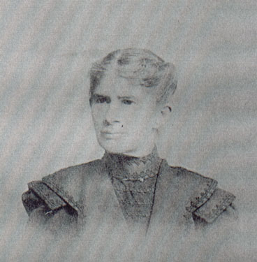

| Mary Eva Bloss was born in 1848. She met and wed Daniel Haberer and had ten children together. They owned a large farm and cider mill in North Syracuse, NY. Her grandson, Robert Brown, came to live with her after his parents divorced and his mom remarried in 1911. Mary died June 11, 1948. |